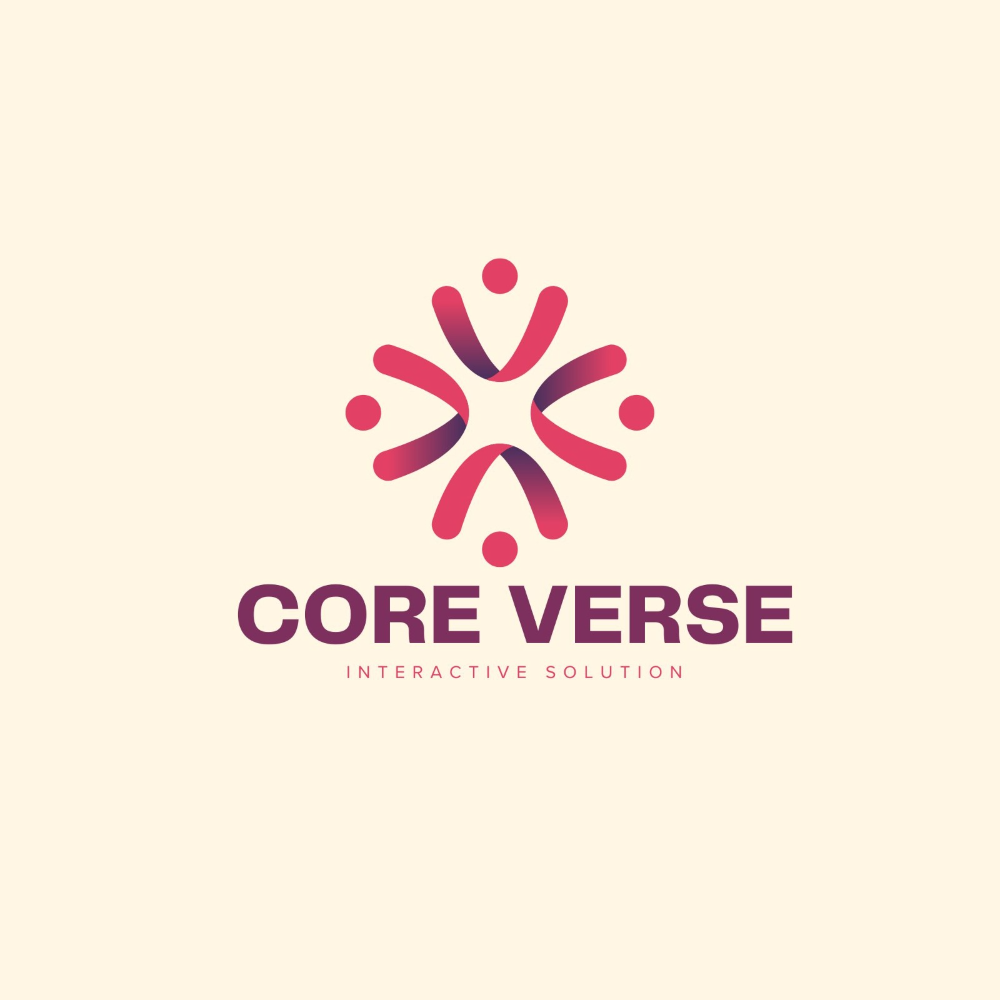

Niraj Pulami
Project Manager / Technical Lead
I oversee overall project direction and technical architecture, define system requirements, and co-lead presentation deliverables across development milestones.

Interactive Health & Safety Training
We build short, interactive 360° safety training that warehouse and logistics teams actually finish — with the compliance record to prove it.
CoreVerse empowers enterprise organizations to bridge compliance gaps through intuitive, interactive training modules designed for seamless tracking and measurable skill development. We transform traditional workplace learning into an engaging, audit-ready digital experience.Get in touch
Who we are
Seven students, seven roles, one client brief. Here's who built CoreVerse.
Project Manager / Technical Lead
I oversee overall project direction and technical architecture, define system requirements, and co-lead presentation deliverables across development milestones.
Deputy Project Manager / Documentation Manager
I assist with project oversight, maintain meeting minutes and project records, and manage our e-portfolio submission evidence for total documentation compliance.
Presentation & E-Portfolio Coordinator
I direct our presentation preparation and timing scripts while coordinating e-portfolio evidence collection to showcase our complete project deliverables.
Developer / UI Support
I assist with frontend web development, support the creation of intuitive UI layouts, and help implement accessible portal components across the platform.
Research & Quality Analyst
I conduct PACT and heuristic usability research while leading quality assurance testing to ensure our compliance platform meets the highest standards of performance and usability.
Technical Support & Maintenance
I direct system maintenance protocols, optimize runtime performance, and resolve technical anomalies across all portal environments to guarantee an uninterrupted, production-ready experience during live evaluations.
Testing
I architect end-to-end quality assurance protocols, execute rigorous boundary and edge-case test suites, and validate core business logic across all portals to deliver an error-free audit-ready compliance platform.
What we offer
Custom, scenario-based safety training built around your actual floor layout — hazard spotting, quizzes and instant feedback, not a slideshow.
A manager view that shows who's trained, who's overdue, and an exportable audit record ready for an inspection.
Browser-based, so it runs on the same shared devices your team already uses on the warehouse floor — nothing to install, nothing to maintain locally.
New modules and scenarios added as your sites, equipment and risks change.
How we work
Every CoreVerse module is shaped by direct conversations with the people who'll use it — short modules, real scenarios, and feedback you can act on, because that's what our clients told us they needed.
Zero-budget marketing
Our plan is to grow CoreVerse's reputation without a marketing budget, using channels that are free or already available to a student-led company.
A professional presence on LinkedIn for decision-makers, and short-form content on TikTok to reach a younger warehouse workforce.
We plan to share a short platform walkthrough on LinkedIn aimed at HR and compliance decision-makers, alongside brief TikTok content aimed at frontline warehouse staff, to reach both audiences in the channels they actually use.
Cold-emailing small and medium logistics/warehouse businesses directly, offering a free walkthrough of the platform.
We plan to directly email regional logistics and warehouse operations managers, offering a free walkthrough of the platform, as a low-cost way of generating interest from business who match our target client profile.
Attending IOSH (Institution of Occupational Safety and Health) events to meet health and safety professionals directly.
We plan to attend a regional IOSH (Institution of Occupational Safety and Health) event to present CoreVerse directly to safety professionals and gather feedback from people who work in this field day to day. This is planned for the next stage of the project.
Using the university careers office's employer network to get introductions to local businesses.
We plan to approach the university's careers and enterprise office to make use of their employer network, with the aim of securing introductions to local logistics and warehouse business who may be interested in CoreVerse.
Get in touch
Interested in CoreVerse for your team? We'd like to hear from you.
contact@coreverse-learning.com